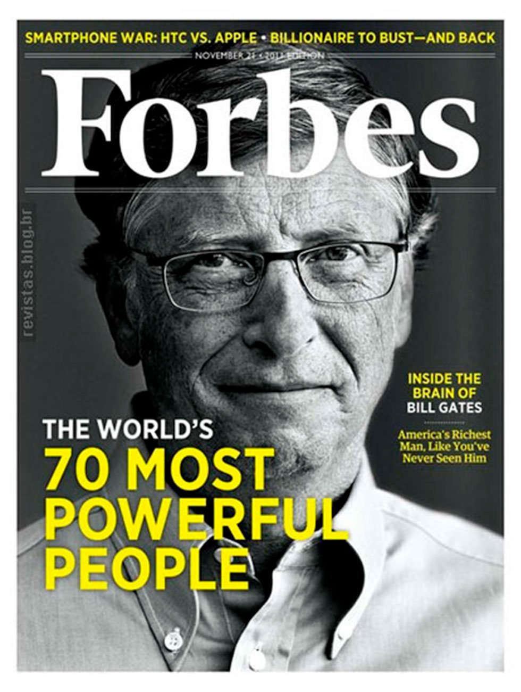
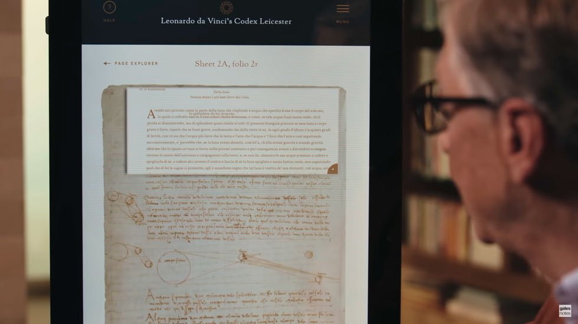

BILL GATES: AINDA NO TOPO!
Conheça mais sobre a história do empresário filantropo eleito por 17 anos o mais rico do planeta

- "Fundador da Microsoft"
- "Considerado homem mais rico do mundo por 17 anos
- "Criou a Fundação Bill & Melinda Gates, onde doa grandes valores de seu patrimônio para causas humanitárias
William Henry Gates III (66 anos), não é uma personalidade qualquer, é o pai da Microsoft, maior empresa de softwares do mundo. Só o simples fato de o Windows estar em mais de 80% dos computadores de mesa no mundo já é algo que vale a atenção para o principal nome por trás do desenvolvimento deste sistema operacional.
Além disso, é um sujeito interessante por várias outras características, incluindo o fato de ser uma das pessoas mais ricas do mundo e com uma das fundações filantrópicas mais ativas em todo o planeta.
Ele é uma personalidade tech que tem muita influência, é sem dúvidas uma das pessoas que ajuda a moldar o futuro da sociedade.
ALGUMAS CURIOSIDADES SOBRE A VIDA DE BILL GATES
- A primeira curiosidade tem a ver com a educação dele - Ele sempre foi uma pessoa acima da média em desempenho escolar. Todos viam ele como uma pessoa muito inteligente. Para vocês terem uma ideia, na oitava série ele fez um teste de matemática e teve o melhor desempenho de todo o seu estado. Mas não só, na verdade de toda oitava série existente nos Estados Unidos.
- Foi considerado o homem mais rico do mundo segundo a Forbes por 17 anos. A marca não é de 17 anos consecutivos, apesar de ter sido o mais rico de forma consecutiva de 1995 a 2007.

- Em 1994, ele comprou a coleção de livros originais do renascentista Leonardo Da Vinci. O preço? Míseros US$31 bilhões de dólares. Certamente é algo pouco comum alguém com muito dinheiro e poder compartilhar informações tão valiosas de forma tão acessível. Contrariando muitas das teorias da conspiração contra sua pessoa, Gates, em vez de esconder informação, compartilhou conteúdos valiosos e comprados por 31 bilhões de dólares. A disponibilização foi feita via internet e está em museus famosos ao redor do mundo. Algumas das páginas e desenhos foram disponibilizados até como papel de parede do Windows.
